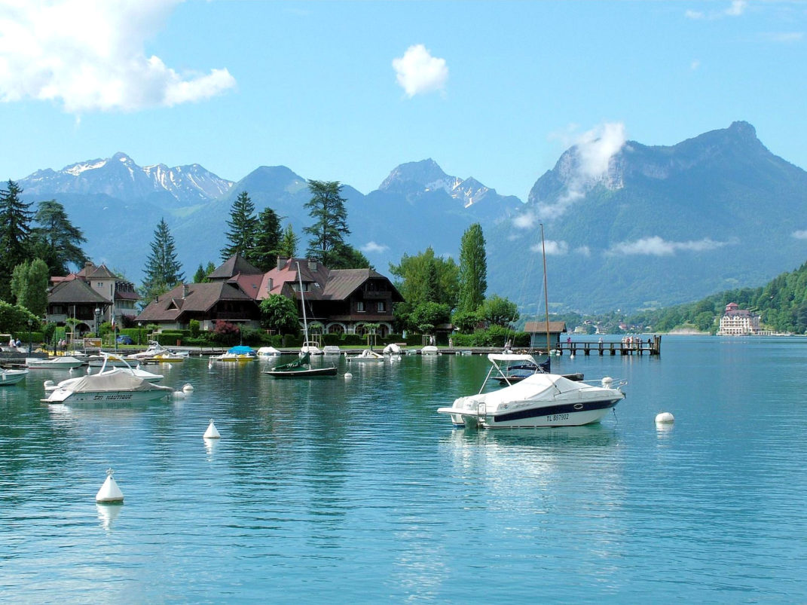

Дата і місце народження: 3 вересня 2006 року, м. Ромни.
Освіта: КЗ Роменський ліцей №4 ім. Героя України Тетяни Маркус, КПІ ім. Ігоря Сікорського, факультет інформатики та обчислювальної техніки (спеціальність "Комп'ютерна інженерія").
Моїм найулюбленішим містом, де я бувала, є Ансі (Франція). Це неймовірно мальовниче містечко, яке часто називають "Альпійською Венецією" завдяки мережі каналів, що пронизують його історичний центр. Місто розташоване на березі кришталево чистого однойменного озера в оточенні величних гір, що створює неповторну атмосферу затишку та краси.
